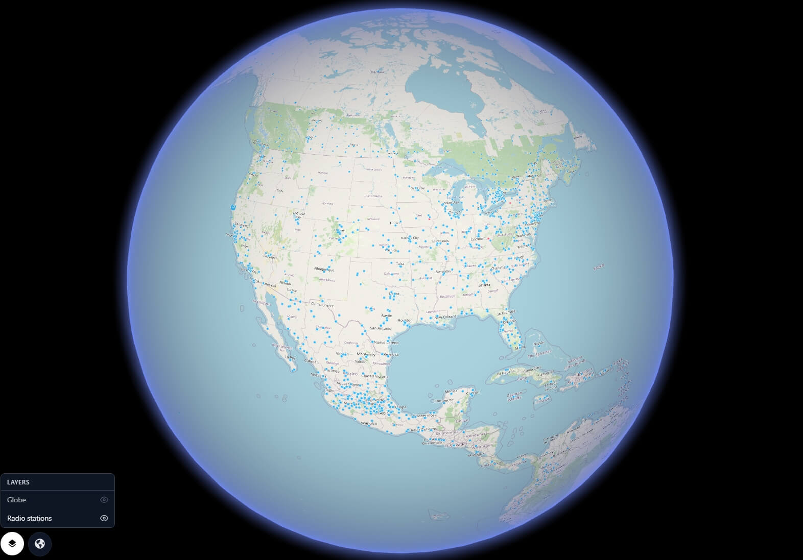
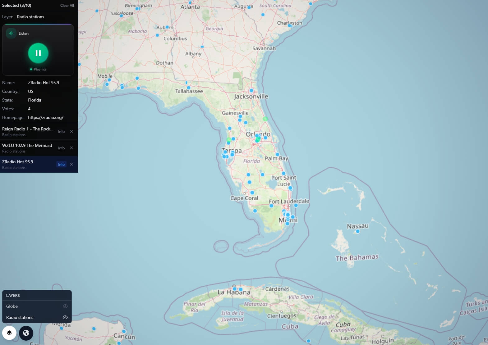
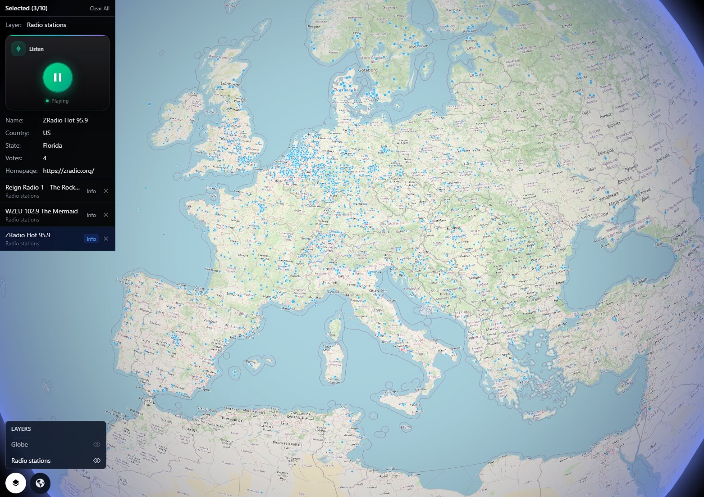
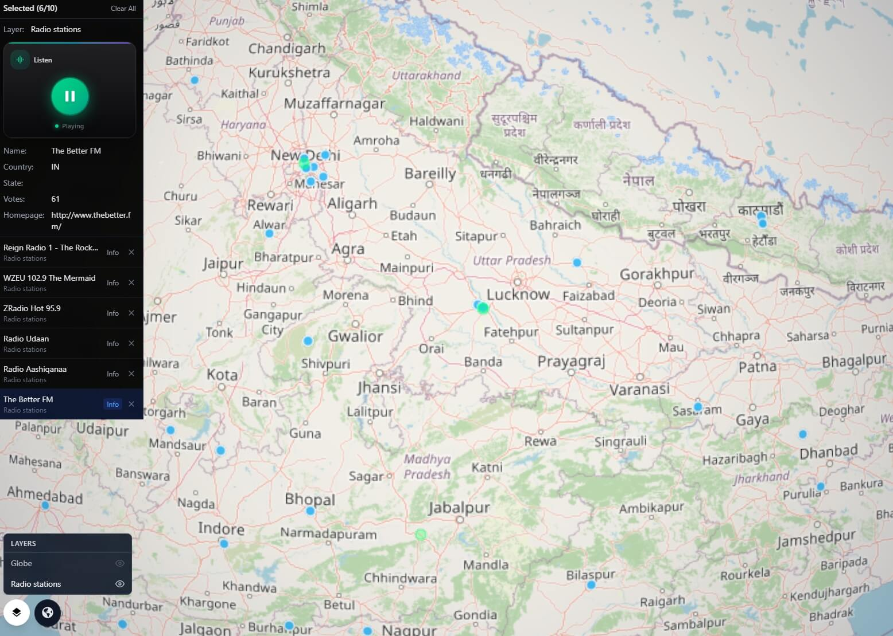

Live Radio Stations on the Globe
26,000+ internet radio stations from 246 countries, plotted live on a 3D globe. Click any dot, hear the station play instantly. Filter by genre, language, country, or codec — in real time.
GRIP 3D connects to the open Radio Browser API — a live, community-maintained database of over 26,000 internet radio stations — and renders every geolocated station as an interactive point on a live 3D globe. Users can click any station dot to open its info panel, start playback immediately, see metadata including name, country, language, codec, bitrate, and vote count, and filter the entire globe view by genre tag, language, country code, or audio codec. It turns the world's radio landscape into a navigable spatial experience — from a single jazz station in New Orleans to a news broadcast in Tokyo, all reachable in one click.

Internet radio directories exist as long scrollable lists or basic search forms. There is no spatial context — no way to see where stations are, how they cluster, or how audio culture maps across geography.
- Radio directories are text lists with no geographic layer
- No way to discover stations by exploring a region visually
- Station density patterns — urban, rural, language clusters — are invisible
- Switching between stations requires navigating away from context
GRIP 3D pulls the full Radio Browser station database onto a live 3D globe — every station a clickable dot, every click an instant stream. The globe becomes a spatial audio discovery tool that no list or search form can replicate.
- 26,000+ stations plotted as live geo-located points on the globe
- Click any station dot to open panel and start playback instantly
- Filter globe by genre tag, language, country code, or codec
- Station metadata — name, votes, bitrate, homepage — surfaced in one panel
Why this works at global scale
Capabilities
- All geolocated stations rendered as live dots on the 3D globe
- Click-to-play — select any station dot to open info panel and stream audio instantly
- Filter globe view by genre tag (jazz, rock, news, classical, pop, and 6,700+ others)
- Filter by language (374 languages), country code (ISO 3166-1), or audio codec (MP3, AAC, HLS)
- Station panel shows: name, country, state, language, votes, bitrate, codec, and homepage link
- Top voted and most clicked stations surfaced as a ranked sidebar layer
- Community vote system — vote for any station directly from the globe interface
- Powered by Radio Browser open API — 26,514 working stations, checked daily for uptime
Station Examples
A sample of what's playable directly from the globe — from any region, any genre.
Globe Filter Layers
Powered by Radio Browser API
GRIP 3D integrates the open-source Radio Browser API — a free, community-maintained database of internet radio stations running since 2015. The API is distributed across multiple servers globally with no authentication required, returning real-time station data including geo coordinates, stream URLs, metadata, and uptime status.
https://de1.api.radio-browser.info
| Endpoint | Used for | Returns |
|---|---|---|
/json/stations/search?hasGeoInfo=true |
All geolocated stations for globe plot | name, geo_lat, geo_long, url, country, language, codec, bitrate, votes |
/json/stations/topvote/100 |
Top voted stations sidebar layer | Top 100 by community votes, with full metadata |
/json/stations/topclick/100 |
Most popular stations by click count | Top 100 by daily clicks with stream URLs |
/json/stations/search?tag=jazz |
Genre tag filter layer on globe | All stations matching tag, filterable by codec & country |
/json/stations/bycountrycodeexact/US |
Country filter layer | All stations in a specific ISO 3166-1 country |
/json/url/{stationuuid} |
Record click & retrieve stream URL on play | Resolved stream URL + marks station as clicked |
/json/vote/{stationuuid} |
Vote for a station from globe panel | Vote confirmation (once per IP per day) |
/json/tags |
Populate genre filter chip list | All 6,757 tags with station counts |
/json/languages |
Populate language filter list | All 374 languages with station counts |
/json/countries |
Country filter dropdown | All 246 countries with ISO codes & station counts |
Who Uses This
- Media & Broadcasting — Map your owned and competitor stations globally; visualize reach and coverage gaps by region and language
- Music & Culture Research — Explore how musical genres cluster geographically; see where languages dominate the airwaves
- Travel & Discovery — Tune into the sound of any city or country before you arrive — local news, local music, local voice
- Language Learning — Filter stations by your target language and listen to native broadcasts from across the globe
- Radio Enthusiasts — The world's radio landscape in a single interactive view; discover stations you would never find by searching
- Developers & Researchers — Live Radio Browser API integration with globe rendering — a reference architecture for spatial audio apps
- Journalists & Analysts — Monitor broadcast density in conflict zones, election regions, or areas of media interest
- Educators — Show students where languages are spoken and broadcast — geography meets linguistics on one globe
Platform Views



Open for consulting and partner integrations
If you want this use case mapped to your data sources, we can deliver a fast prototype and integration plan — including layers, APIs, and deployment options.